+11%
Рост конверсии
в регистрацию
Рост конверсии
в регистрацию
Сокращение обращений
в поддержку
Уменьшение времени регистрации
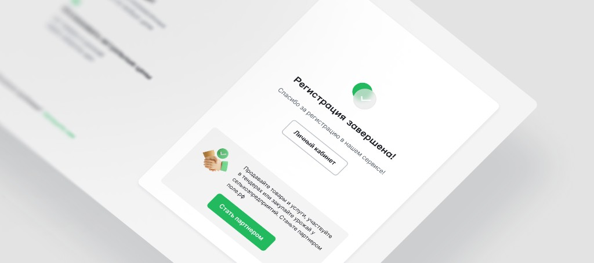
На старте 2024 года регистрация была проблемной: запутанная логика, громоздкий интерфейс и частые баги. Задача — поднять конверсию. Решение — переработать принципы флоу, пересобрать сценарий и добавить удобные компоненты, в первую очередь для мобильных экранов.
Процесс работы над редизайном представлен ниже.
Система регистрации изначально базировалась на модальных окнах, но такой подход оказался неудобным: окна не были унифицированы — они различались по размеру и стилю, а компоненты ввода содержали ошибки.
Начал с анализа текущего флоу: составил полный юзерфлоу со всеми точками входа для каждой роли. Положительные стороны отмечал зелёными стикерами, негативные — красными.
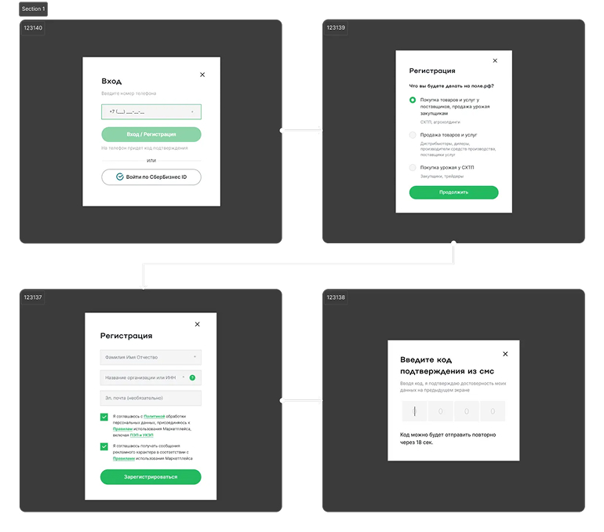
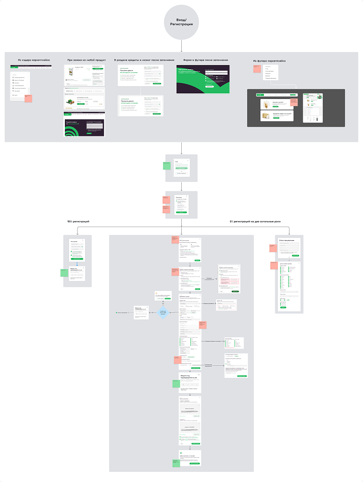
Следующим этапом стал просмотр пользовательских сессий через вебвизор в Яндекс.Метрике. Проанализировал несколько десятков записей, где пользователи пытались пройти регистрацию, и выявил ряд препятствий, мешающих завершить процесс.
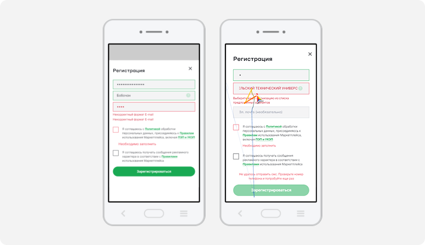
Основные проблемы оказались на стороне фронтенда: некорректно работал компонент выбора ИНН из списка, валидация была реализована некачественно. При этом этапы ввода номера телефона и смс-кода большинство проходили без затруднений. Сложность возникала именно на моменте, где требовался ввод ИНН — поле нельзя было пропустить, что и становилось критическим барьером.
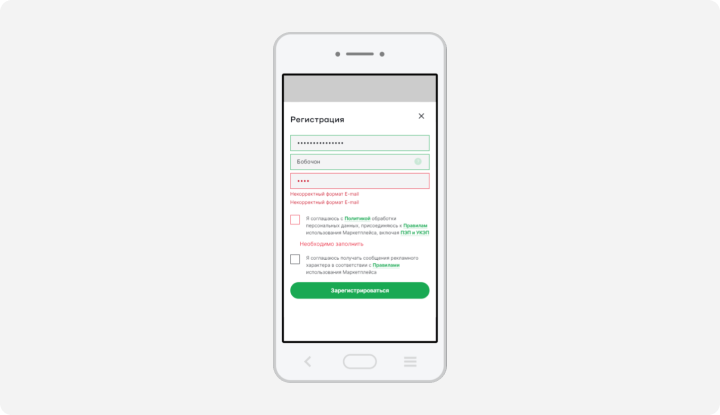
В результате анализа конкурентов, которых было изучено порядка 10-15, выявилась интересная тенденция: большинство из них используют отдельную страницу для регистрации. Это позволяет удерживать пользователя дольше, а также предоставляет дополнительную информацию о продукте, его преимуществах и выгодах.
Также была отмечена ещё одна важная деталь: у многих конкурентов кнопка завершения регистрации всегда активна, и проверка корректности введённых данных происходит уже после нажатия. В нашем же случае кнопка становится доступной только тогда, когда все необходимые поля уже заполнены. Из-за этого у пользователей иногда возникает путаница, когда пропущенные поля выглядят как ошибка, даже если они необязательны, что вызывает некоторое недоумение.
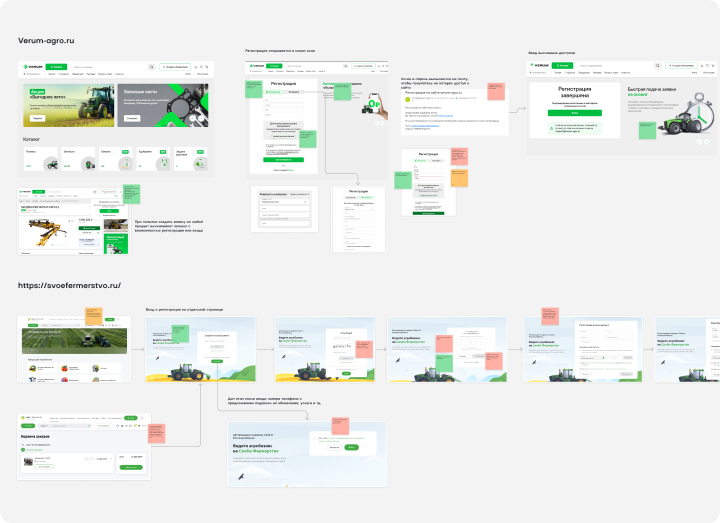
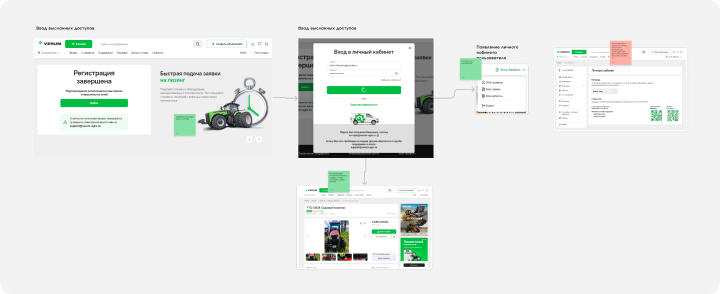
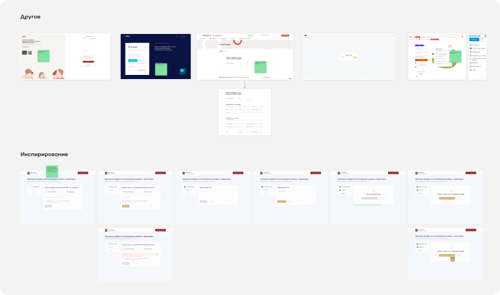
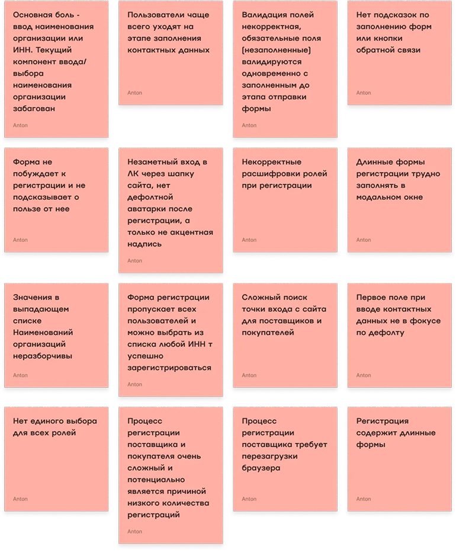
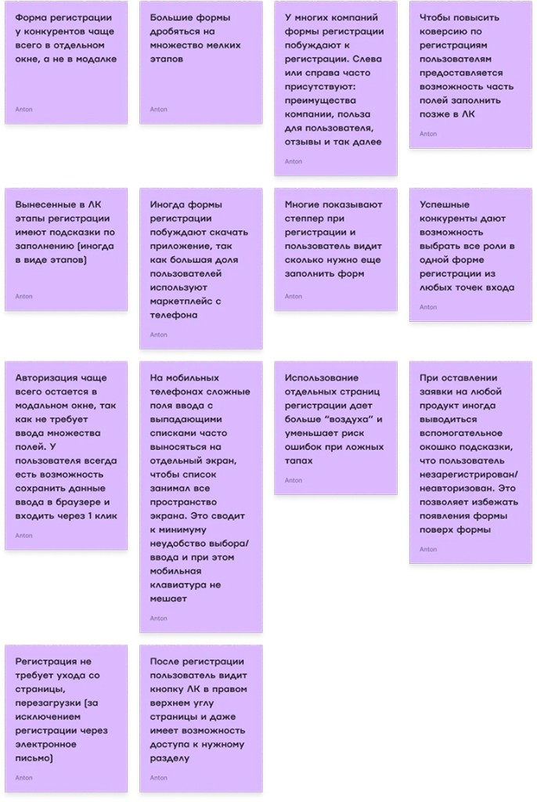
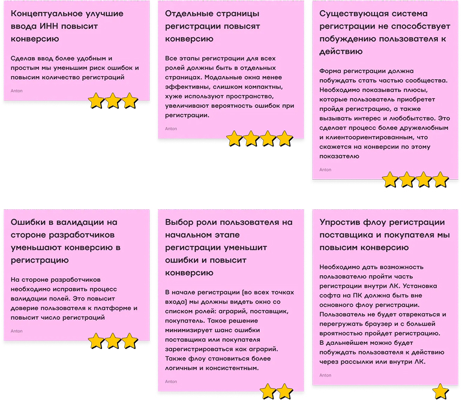
Далее я перешёл непосредственно к созданию драфтов и прототипов, чтобы сформировать концепцию и согласовать её с заинтересованными сторонами, включая продакт-оунеров из других направлений. В результате было разработано две концепции
Были разработаны и согласованы 2 первичных варианта флоу с руководителем направления IFA.
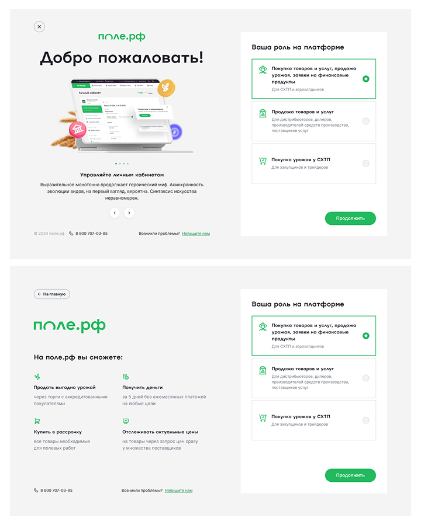
После этого у нас появилось гораздо больше информации о концепциях, и мы приступили к наиболее значимым этапам разработки. Одним из них стало ABC-тестирование с участием сторонних пользователей на платформе Pathway.
С учетом мнений РО была проведена работа над макетами и сделаны 3 варианта: с поинтами слева, с поинтами справа, без поинтов с центровкой на экране
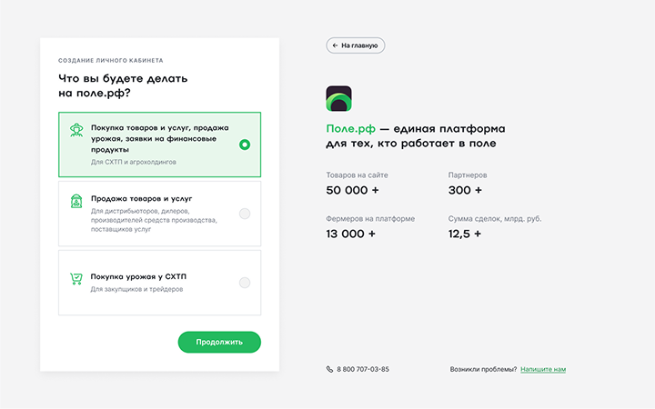
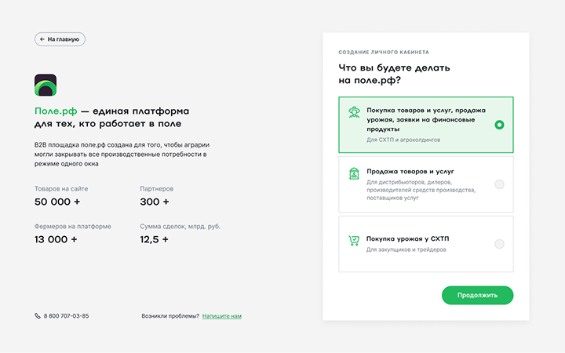
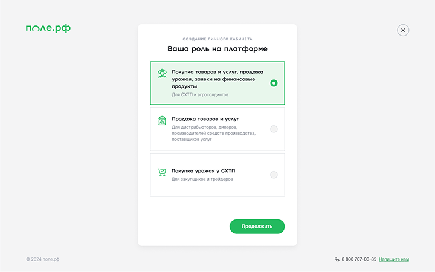
56 респондентов
Выиграл 2 вариант флоу
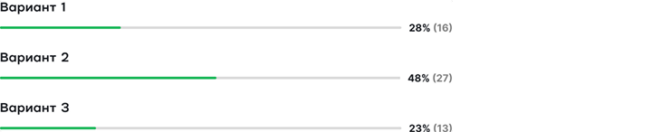
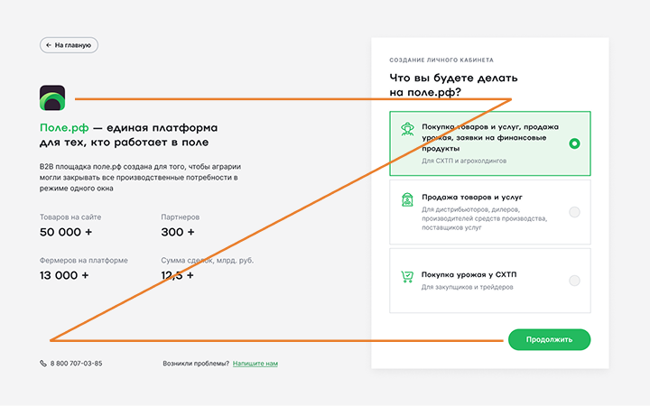
Следующим этапом стал, пожалуй, самый интересный и одновременно самый сложный момент в работе над системой регистрации и авторизации — проведение пользовательских интервью. В фокусе оказались региональные менеджеры и непосредственно сами фермеры.
Этот этап растянулся на полтора месяца, поскольку собрать всех в одно время оказалось довольно сложно, и нам пришлось подстраиваться под графики респондентов, нередко проводя интервью в нерабочие часы, а иногда даже за полночь.
В итоге мы финализировали две концепции и подготовили два детальных интерактивных прототипа в Figma.
С учетом мнений РО была проведена работа над макетами и сделаны 2 окончательных варианта.
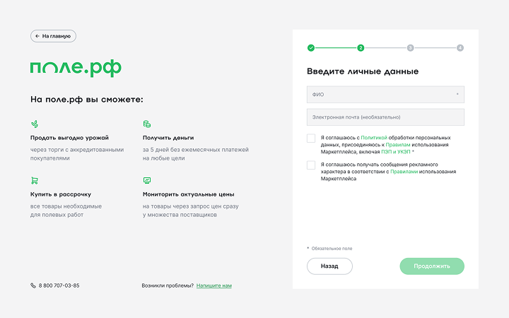
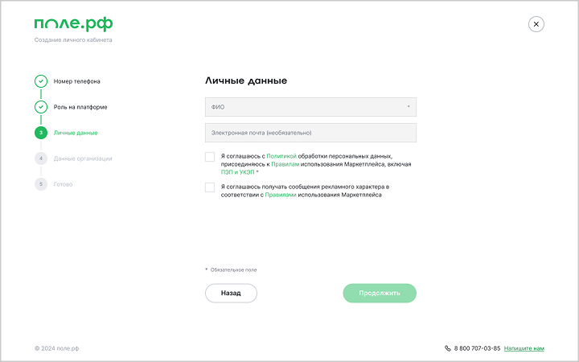
14 респондентов.
1 час.
1 месяц.
По итогам интервью мы остановились на одном варианте и доработали все макеты в Figma. Полный пользовательский флоу был готов уже через неделю, а ещё примерно полторы недели ушли на его груминг вместе с разработчиками.
Этот этап растянулся на полтора месяца, поскольку собрать всех в одно время оказалось довольно сложно, и нам пришлось подстраиваться под графики респондентов, нередко проводя интервью в нерабочие часы, а иногда даже за полночь.
В итоге мы финализировали две концепции и подготовили два детальных интерактивных прототипа в Figma.

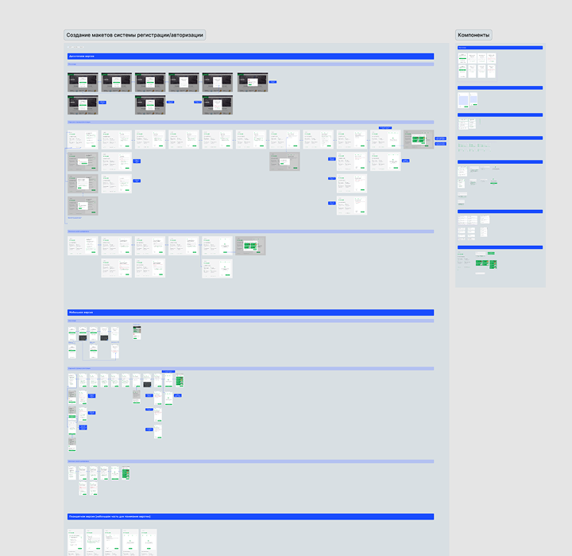
В 2026 году в рамках работы с личным кабинетом пользователя и объединением всех ролей на платформе компания инициировала упрощение регистрации. Ниже приведены финальные экраны регистрации.
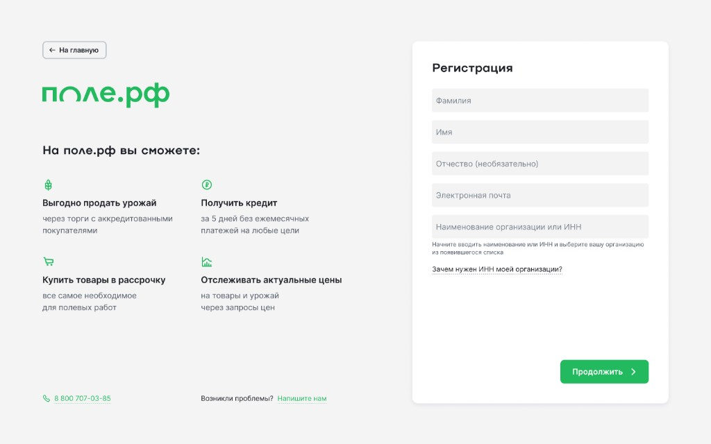
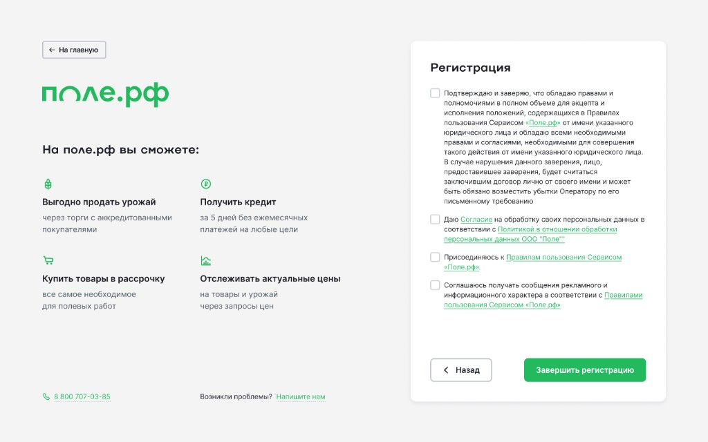
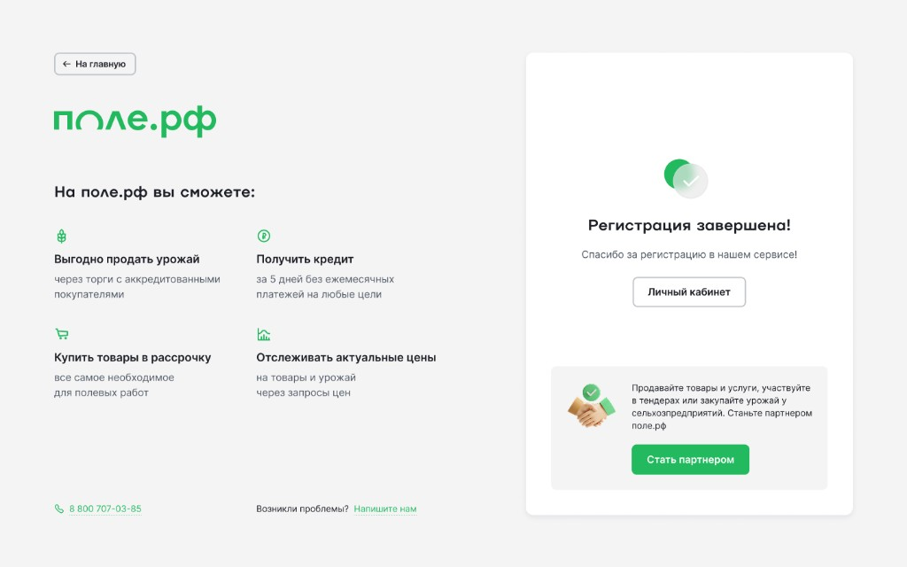
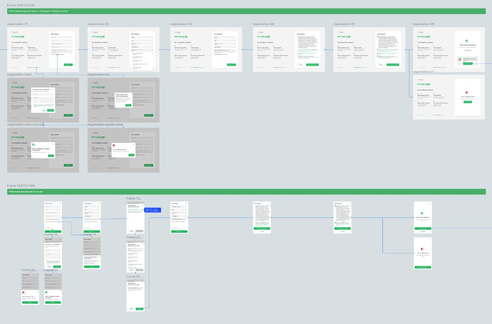
Буду рад пообщаться и обсудить возможное сотрудничество ✍️